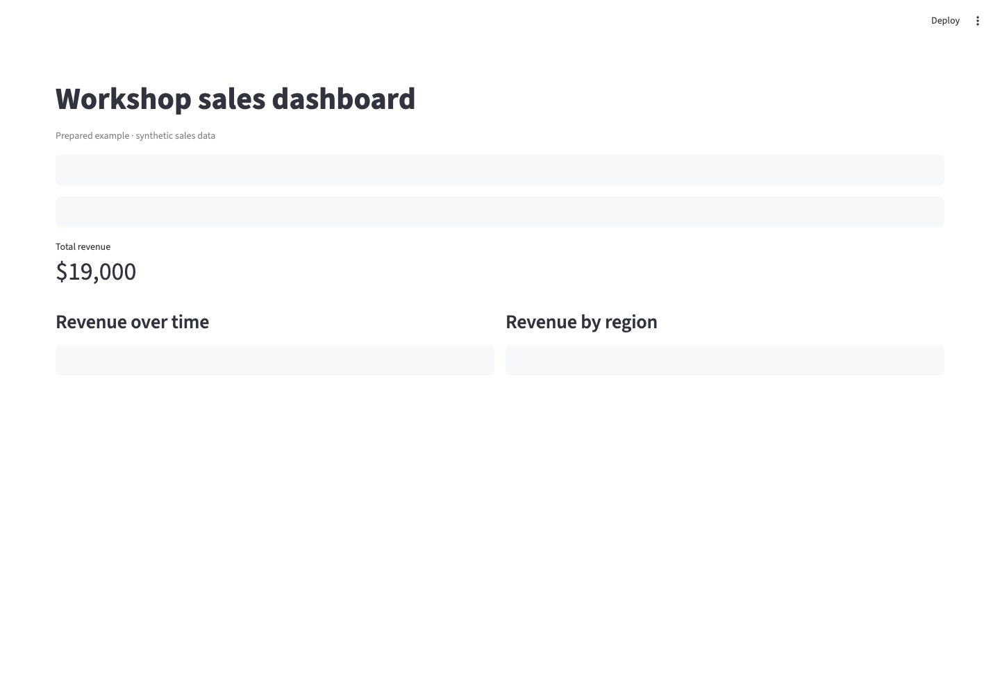

Run commands → shell & processes
Run the project's tests. The process runs with the access its environment gives it.
ODSC AI West 2026
Secure Autonomy with Micro VMs
Rami Krispin
Source: workshop development plan, workshop overview and slide 01.
Why agents need sandboxes
An agent uses tools to act toward a goal. Each action reaches a resource.
Run the project's tests. The process runs with the access its environment gives it.
Update the dashboard source. The agent reads and writes the workspace files its tools can reach.
Fetch a dependency. The agent reaches a package source and changes its software environment.
Build an application image. The Docker client asks an engine to perform the build. Which engine matters.
The agent starts a process. That process runs with the access its environment gives it.
Sources: workshop development plan, slide 02; Docker isolation layers — docs.docker.com/ai/sandboxes/security/isolation/
Capability → access
Choose a task. Consider which resources its tools may need.
We can ask for a suggestion without granting local tool access.
Illustrative task needs, not a permission setting or risk score. Model-provider access is omitted.
Sources: deck plan, slide 03; Docker isolation layers — docs.docker.com/ai/sandboxes/security/isolation/
The human in the loop
Repeated prompts can turn review into a reflex.
A thoughtful first approval. Then another request arrives.
The engineer reads a test request and decides to approve.
Install a package. Edit a file. Run another command.
The stamp keeps moving. How much review remains?
Source: workshop development plan, animation A. Explanatory comic; not a measured user study.
Define the boundary first
A controlled environment gives agent tools defined access to resources.
Share a chosen project. Mount mode and permissions define access. Shared writable files remain writable.
Choose allowed destinations. Network access follows the environment's policy.
Grant only credentials the task needs. A sandbox does not make a shared secret harmless.
File access follows the workspace's mount mode and permissions. Shared writable files remain writable.
Sources: Docker isolation layers — docs.docker.com/ai/sandboxes/security/isolation/; local access controls — docs.docker.com/ai/sandboxes/governance/access-controls/local/
Ways to create a boundary
Where code runs, which kernel it uses, and what we configure all matter.
The existing host session
The host's kernel
User access; little extra setup, broad integration
Tools run in the existing host session, using its kernel and user access. Little extra setup; broad integration.
Tools still use the host kernel. Configure process policies; guarantees and compatibility depend on the controls.
Tools use a shared Linux kernel. Configure mounts and capabilities; efficient integration needs deliberate sharing.
Tools run in a VM with its own kernel. Configure VM resources and integrations; accept extra startup and resource cost.
Kernel: the OS component managing processes and resources.
MicroVM: a lightweight virtual machine with its own kernel. Isolation is a design choice, not a score.
Sources: Docker security — docs.docker.com/engine/security/; Docker isolation layers — docs.docker.com/ai/sandboxes/security/isolation/
The configuration matters
Containers isolate processes. We still choose the resources we share.
A chosen project mount grants file access. It does not, by itself, grant control of the Docker daemon.
Grants access to selected project files. Container isolation still applies; file access follows mount permissions.
Connects a client to the daemon. The client may request new containers and bind mounts, subject to daemon privileges.
Sources: Docker security — docs.docker.com/engine/security/; bind mounts — docs.docker.com/engine/storage/bind-mounts/; Docker Desktop VM — docs.docker.com/desktop/features/vmm/
Follow the daemon request
The client asks the daemon to create another container with a host bind mount.
Container A has a Docker client and a connection to the host daemon. It has no mount of the dummy folder.
Sources: Docker daemon attack surface — docs.docker.com/engine/security/#docker-daemon-attack-surface; bind mounts — docs.docker.com/engine/storage/bind-mounts/
Live demonstration
docker run --rm \
-v /var/run/docker.sock:/var/run/docker.sock \
docker:cli \
docker run --rm \
-v "$DEMO_DIR:/host-data:ro" \
alpine cat /host-data/proof.txtLines 1 and 3 choose the first container and its client image. The complete command runs from the host shell.
Start container A with a Docker client image.
Mount the host daemon socket into A.
A's client requests a new container B from that daemon.
The daemon mounts the dummy host folder read-only in B. DEMO_DIR expands in the host shell.
B reads the harmless proof.txt through that mount.
Revisit the chain: client → socket → daemon → B → read-only fixture.
Observe: container B prints the dummy file. Prepared demo runbook · DEMO_DIR is set before the demo.
Sources: Docker run — docs.docker.com/reference/cli/docker/container/run/; bind mounts — docs.docker.com/engine/storage/bind-mounts/; demo/01-docker-socket/runbook.md
Change the destination of Docker work
The sandbox has its own Docker engine and Linux kernel.
The daemon handles the request and manages the resulting containers. This is the configuration we just demonstrated.
A deliberately mounted socket lets the client ask the host daemon to manage containers.
The sandbox client sends Docker work to its own engine, inside its microVM and separate Linux kernel.
The chosen workspace crosses the VM boundary intentionally. Shared writable files remain writable.
Outbound connections follow network policy. VM isolation does not remove network access decisions.
Shared writable files remain writable. Local stdio MCP servers can run on the host, outside the VM boundary.
Sources: Docker isolation layers — docs.docker.com/ai/sandboxes/security/isolation/
Useful work inside the boundary
Its own Docker engine keeps working. The host daemon is a different destination.
The robot's useful Docker work stays inside the microVM.
The sandbox engine builds an image inside the microVM.
The attempted hose does not connect to the host daemon by default.
The robot returns to its own engine. Shared resources still need care.
Shared writable files remain writable. The VM boundary does not replace access decisions.
Sources: Docker isolation layers — docs.docker.com/ai/sandboxes/security/isolation/; workshop development plan, comic C. Explanatory illustration.
Launch with an explicit workspace
Before presenting: sbx installed · Docker sign-in · agent authentication · network policy selected.
cd demo/02-agent-streamlit
sbx run \
--name odsc-demo \
codex \
.Line 1 changes the host shell's current directory. Start from the workshop root.
Choose the project folder from the workshop root.
Run the sandbox and give it the name odsc-demo.
Select Codex as the coding agent.
The dot shares the current directory as the direct workspace. Writable edits reach host files.
Project, sandbox name, agent and workspace make the launch explicit. Authenticate and select network policy before the session.
Local sbx does not require Docker Desktop. The earlier socket demo needs a host Docker daemon. Launch runbook
Sources: Docker usage — docs.docker.com/ai/sandboxes/usage/; installation — docs.docker.com/ai/sandboxes/install/; Codex setup — docs.docker.com/ai/sandboxes/agents/codex/
Nine-minute demonstration · 33:00–42:00
Build a Streamlit dashboard with region/product filters, total revenue, a time trend, and a regional chart. Create the app, dependencies, and a Dockerfile. Build and run with the sandbox's own engine.
Synthetic local data · no external API or database
date,region,product,revenue
2026-01-01,West,Notebook,1200
2026-01-01,East,Notebook,900
Prepared example · Open labeled fallback
Dates, regions, products and revenue are synthetic data for this workshop.
date,region,product,revenue
2026-01-01,West,Notebook,1200
2026-01-01,East,Notebook,900Build region/product filters, total revenue, a time trend and a regional chart. Create app.py, dependencies and a Dockerfile. Use the sandbox engine. Prompt instructions describe work; configuration enforces access.
df = pd.read_csv(DATA, parse_dates=["date"])
regions = st.multiselect("Region", df.region.unique(), df.region.unique())
product_choices = df["product"].unique()
products = st.multiselect("Product", product_choices, product_choices)
filtered = df[df.region.isin(regions) & df["product"].isin(products)]
st.metric("Total revenue", f"${filtered.revenue.sum():,.0f}")Load dates, choose filter values, keep matching rows, and aggregate revenue. DATA is the prepared file's local CSV path.
FROM python:3.12-slim
WORKDIR /app
COPY requirements.txt .
RUN pip install --no-cache-dir -r requirements.txt
COPY app.py .
COPY data/ data/
EXPOSE 8501
CMD ["streamlit", "run", "app.py", "--server.address=0.0.0.0", "--server.port=8501"]docker build -t odsc-sales:workshop .
docker run -d --name odsc-sales -p 8501:8501 odsc-sales:workshopBase → dependencies → app/data → listening service. Run from the sandbox project. The -p mapping exposes container port 8501 on sandbox port 8501.
sbx ports odsc-demo --publish 8501
sbx ports odsc-demoRun in the host shell. Publish sandbox port 8501, then inspect the assigned host port. Open the actual binding reported there; no port number is assumed. The screenshot/fallback is a prepared example, not proof of a fresh agent run.
Route: 33–34 task; 34–36 agent time-box; 36–38 filter/CMD/build; 38–40 run/publish; 40–42 test and boundary.
Prepared source, not generated output: full app · demo runbook. At 36:00, switch to the prepared result if generation is incomplete.
Sources: prepared demo/02-agent-streamlit/expected-output/; Docker ports — docs.docker.com/ai/sandboxes/usage/#publish-ports; Streamlit — docs.streamlit.io/
Control the resources we share · 42:00–43:00
Decide where edits go. Choose outbound destinations separately.
The selected project is shared read-write. Agent edits change that host working tree.
Workspace mode selects where edits go. It does not change the independently chosen network policy.
The chosen host working tree is shared read-write. Agent edits reach those host files.
Edits stay in a separate working copy. The source remains readable at /run/sandbox/source, including ignored and untracked files. Network policy is a separate choice.
Clone mode limits writes to the source; it does not hide its contents.
Sources: Docker workspace isolation — docs.docker.com/ai/sandboxes/security/isolation/#workspace-isolation; local policy — docs.docker.com/ai/sandboxes/governance/access-controls/local/
Six-minute demonstration · 43:00–49:00
sbx run --name odsc-direct codex .
sbx run --clone --name odsc-clone codex .Direct edits reach the host project. Clone edits stay in the clone until deliberately transferred.
These are alternative prepared environments. Start from the sanitized Git fixture in the runbook.
sbx run --name odsc-direct codex .
sbx run --clone --name odsc-clone codex .Prediction: direct edits reach host files; clone edits stay in its working copy. These are two prepared environments, not a mode switch. Verify edits and file locations in the terminal.
No observed result recorded.
sbx exec odsc-clone cat /run/sandbox/source/ignored-demo.txt
sbx exec odsc-clone sh -c \
'printf "%s\n" "Source edit" > /run/sandbox/source/marker.txt'Prediction: the harmless ignored file is readable; writing the read-only source fails. Verify actual output and exit status. The clone working copy remains separate.
No observed result recorded.
sbx policy ls odsc-direct --wide
sbx policy check network --sandbox odsc-direct example.com:443
sbx exec odsc-direct curl -I --max-time 10 https://example.comPrepare an explicit sandbox-scoped allow using the runbook. Policy check evaluates authorization without sending HTTP. The actual request runs inside the sandbox and can fail for other reasons.
No observed result recorded.
sbx policy ls odsc-direct --wide
sbx policy check network --sandbox odsc-direct example.org:443
sbx exec odsc-direct curl -I --max-time 10 https://example.orgPrepare an explicit sandbox-scoped deny using the runbook. Correlate the actual request failure with its deny decision and matched rule. Unmatched approval-required access is a different state.
No observed result recorded.
Preparation and cleanup: access-control runbook. Keep provider access; remove only new demo rule IDs. Finish by 49:00.
Sources: Docker local policy — docs.docker.com/ai/sandboxes/governance/access-controls/local/; Git workspace modes — docs.docker.com/ai/sandboxes/usage/#git-workspace-modes
Decision guide · 49:00–49:30
Match the execution environment to the workload. Review every shared capability.
Useful for familiar workloads with deliberate mounts, permissions and capabilities.
Useful when agent tools need their own VM boundary and Docker engine.
Start with the workload. Then inspect the files, network, credentials and integrations being granted.
Known application: an ordinary container can fit when its deliberate mounts and privileges match the task.
Agent needs its own engine: a sandbox microVM changes the execution and Docker-engine boundary.
Broad credentials or host tools: review access first. A VM cannot choose appropriate grants for us.
Sources: Docker security — docs.docker.com/engine/security/; Docker isolation layers — docs.docker.com/ai/sandboxes/security/isolation/
Takeaways · 49:30–50:00
Tool calls reach files, processes and services.
Know which kernel and engine do the work.
Review files, credentials, network and host tools.
Workshop resources: presenter/resources.md. Sources: docs.docker.com/ai/sandboxes/security/isolation/; docs.docker.com/ai/sandboxes/governance/access-controls/local/